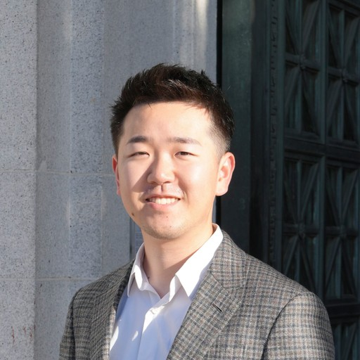

People团队成员
Our team我们的团队
A new lab, starting in 2027 — the founding team starts with you.一个 2027 年起步的新实验室——期待你成为创始成员。
Principal Investigator课题组长

Bowen Deng邓博文 邓博文Bowen Deng
Assistant Professor & PhD Advisor (from early 2027), Institute of AI Innovation and Industry (AI³), Fudan University 复旦大学人工智能创新与产业研究院（AI³）助理教授、博士生导师（2027 年初入职）
Bowen is currently a postdoctoral researcher at MIT with Prof. Rafael Gómez-Bombarelli, working on agentic materials discovery with LLMs and MLIPs. He received his PhD in Materials Science & Engineering from UC Berkeley, advised by Prof. Gerbrand Ceder, and his B.S. from UC Santa Barbara. He is the lead developer of CHGNet, a widely used universal machine learning interatomic potential, and has worked with Google DeepMind (Science Team) and Microsoft Research Asia. 邓博文目前是麻省理工学院（MIT）博士后研究员，合作导师为 Rafael Gómez-Bombarelli 教授，研究基于大语言模型与机器学习势函数的智能体材料发现。他在加州大学伯克利分校（UC Berkeley）材料科学与工程系获得博士学位，导师为 Gerbrand Ceder 教授；本科毕业于加州大学圣塔芭芭拉分校（UCSB）。他是通用机器学习势函数 CHGNet 的主要开发者，曾在 Google DeepMind（Science Team）和微软亚洲研究院工作。
- 3,000+citations总引用
- 17h-index
Google Scholar, Sep 2026数据来源：Google Scholar，2026 年 9 月
Experience经历
- Assistant Professor, Fudan University AI³复旦大学 AI³ 研究院 助理教授
- Postdoc, MIT Learning Matter Group博士后，MIT Learning Matter Group
- Google DeepMind · Science Team
- PhD, UC Berkeley Ceder Group博士，UC Berkeley Ceder Group
- Microsoft Research Asia微软亚洲研究院
- B.S., UC Santa Barbara本科，加州大学圣塔芭芭拉分校
Honors & selected talks荣誉与代表性报告
- MRS Graduate Student Silver Award (2024)美国材料研究学会（MRS）研究生银奖（2024）
- Session Chair, Materials Research Society (MRS) Winter Meeting (2025)美国材料研究学会（MRS）冬季会议 分会主席（2025）
- Invited talk, MRS Fall Meeting (2025)MRS 秋季会议 邀请报告（2025）
- Invited talk, APS March Meeting (2025)APS March Meeting 邀请报告（2025）
- Invited talk, Microsoft Research Science Forum (2024)微软研究院科学论坛 邀请报告（2024）
Members成员